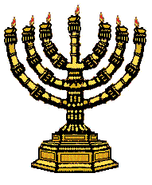
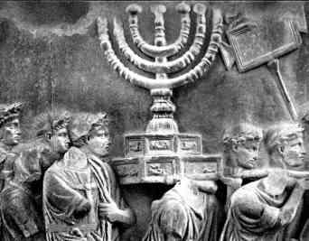

This article will briefly explore the basic meaning behind the Hebrew Sanctuary, and how it reveals God's plan of Salvation for all of humanity. More specifically, we will be looking at the traveling, or portable Sanctuary, that Moses and the Israelites used following the giving of the law on mount Sinai. This Sanctuary was carried by the Israelites as they wandered in the wilderness for 40 years, until a more permanent structure could be built.
In Exodus 25 Moses is shown the plan for the Tabernacle or Sanctuary. This plan was a simplified version of the heavenly Sanctuary or Tabernacle, designed to reveal that Jesus Christ is our High Priest, our mediator, in the plan of salvation-
Exo 25:8 And let them make me a sanctuary; that I may dwell among them.
Exo 25:9 According to all that I show thee, after the pattern of the tabernacle, and the pattern of all the instruments thereof, even so shall ye make it.
The Sacrifice to atone for sin.
Once it was built and functioning, the first step in the Sanctuary services was the offering of a sacrificial animal. This could be any of various animals, including a bullock, goat, lamb, or turtle doves offered for sacrifice by the repentant sinner. The sinner, by transgressing the law of God, recognizes that he faces the prospect of death -
1 John 3:4 Whosoever committeth sin transgresseth also the law: for sin is the transgression of the law.
Rom 6:23 For the wages of sin is death;...
The Sanctuary service provided an illustration of the way the sinner was to repent and atone for his sins. To bring home to the sinner the consequences of his sin, the sinner placed his hands on the head of the animal and confessed his sins to God. He was then required to slay the sacrificial animal by his own hand, as an offering for his sin, and collect the blood of the animal. This emphasized to the sinner that his transgression of the law of God was no small matter, and that death was the inevitable result. The animal that was sacrificed (usually a lamb) was symbolic for Jesus Christ, the Lamb of God, offered as a sacrifice in our place, so that we as sinners do not have to die for our sins.
That was the full extent of the participation on the part of the sinner. From that point forward, all the rest of the service was conducted by a priest as mediator between the sinner and God. This was symbolic of Jesus our High Priest, our mediator between us and God the Father-
1 Tim 2:5 For there is one God, and one mediator between God and men, the man Christ Jesus;
The Brazen Altar of Burnt Offerings.
Exo 27:1-8, 38:1-7.
After confessing his sins over the animal and slaying it, the sinner let the priest as mediator take the lamb (or whatever animal was offered) and place selected portions of it (such as the fat, Lev. 4, 9) on the Brazen (Brass) Altar of Burnt Offerings, to be consumed by the flames. For those too poor to offer an animal, an offering of flour was permitted (Lev 5:11), which was also burned on the Altar. The Altar was constructed of Acacia wood, covered with brass. The Acacia wood symbolized the works of humanity, that but for the brass covering would be consumed by the fire. The brass was a symbol of suffering, so this Altar represented the suffering and death of Jesus Christ that covers and protects the repentant sinner from the divine fire of Judgment. The Altar had at each of its corners, a horn, representing the power, strength, honor, and victory of God. Before being sacrificed, the animal was secured to the horns of the Altar (Psa 118:27). Blood from the sacrificed animal was placed on the horns of the Altar by the priest, and the rest was poured out at the bottom of the Altar (Exo 29:12, Lev 4:7). The fire for the Brazen Altar of Burnt Offerings was a special divinely lit fire, that was started by fire coming down out of heaven (Lev 9:24). This symbolically represents the fire that will ultimately consume all sinners, known as the lake of fire in Revelation.

The Laver.
Exo 30:18-21, 38:8
Located between the Brazen Altar of Burnt Offerings and the Sanctuary, the Laver was a basin filled with water used for ritual cleansing. The Laver was made from the brass "looking glasses" (mirrors) of the women. Before handling the animal sacrifices brought by the people, the priest would have to cleanse his hands and feet with water from the Laver. This was symbolic of the act of baptism. Baptism is a declaration of the repentant sinner that he has been buried with Jesus Christ and resurrected with him as a new creature (Rom 6:4-13). The polished brass of the Laver is to be a "looking glass" revealing our sins, and showing us our need for a Savior, that we might be baptized and receive the righteousness that God offers us though His Son Jesus Christ. If the priest were to neglect this act of cleansing, he would be struck dead as a result (Exo 30:21). Why? Because to reject the cleansing righteousness of Jesus Christ is to die in one's own sin.
Justification
The Brazen Altar of Burnt Offering and the Laver were both outside of the Sanctuary proper, to the immediate east of the entrance. It was also in this area that the animals were slain for the services. These activities carried on outside the Sanctuary represented the process of justification and reconciliation of the sinner through the death of Jesus Christ on the cross, and the acceptance of that vicarious sacrifice of the Lamb of God by the repentant sinner.
The Golden Candlestick (Menorah).
Exo 25:31-39, 37:17-24.
Inside the Sanctuary itself, in what is known as the first apartment, or Holy Place, were three pieces of furniture. To the south side of the room was a large golden candelabra, or Menorah, that had six branches off of a central candlestick. The Menorah used pure olive oil as fuel. It was the job of the priests to daily trim the wicks (which were made of old priestly garments) and refill the bowls of oil, so that the Menorah would constantly be a source of light for first apartment or Holy Place. The Menorah represented Jesus Christ, who is the light of the world, and the olive oil was symbolic of the Holy Spirit and the wicks were symbolic of the righteousness of Christ. The Menorah also represents the seven churches of Revelation, who are to share the light of the gospel message with the rest of the world. It can be found in Revelation 1:12 and 4:5.
Sometimes the central candlestick is illustrated as being slightly taller than the others. The Menorah is also thought to be symbolic of the 7 days of creation, with the taller candlestick representing the Seventh - day (Saturday) Sabbath, the only week day that God sanctified (dedicated to a Holy purpose) -
|  |
|
| On the right is the Menorah as illustrated on the arch of Titus in Rome. The Menorah and other articles from Herod's Temple were apparently taken as war booty by Titus in 70 A.D. after the siege and destruction of Jerusalem by Roman armies. The Israeli government recently asked the Vatican to search its vaults for the Menorah, so that should they have it, it might be returned to the Jewish nation. This is unlikely, since Rome was completely sacked and looted in 410 A.D. by the Visigoths, and again in 455 A.D. by the Vandals. Anything of value (such as a large solid gold candlestick) was probably taken. |  |
| Copyright by Instituto Geographico De Agostini S.p.A. - Novara - 1962 |
The Table of Showbread.
Exo 25:23-30, 37:10-16.
On the north side of the Holy Place was a small table known as the table of Showbread. It was constructed of Acacia wood and covered with gold. On it were kept 12 loaves of unleavened bread (Lev 24:5-9). These loaves were symbolic of Jesus, who is the bread of life (Jn 6:35), but they also represent the 12 tribes of Israel. Also kept on the Table of Showbread, were offerings of wine (Num 28:7), so both the bread and the wine of the Lord's supper were represented here. The Table of Showbread is alluded to in Revelation as a throne before the Candlestick, in chapter 4 verses 2-5.
The Golden Altar of Incense.
Exo 30:1-10, 37:25-29.
On the west side of the Holy Place, immediately before the veil separating the Holy Place from the Most Holy Place, was a small Golden Altar of Incense. In it was a brass pot, containing hot coals from the Brazen Altar of Burnt Offerings, and it was here that a very special blend of incense was burned by the priest, which filled the Sanctuary with a sweet smelling cloud, and obscured the glory of God over the mercy seat of the ark on the Day of Atonement, preserving the life of the High Priest (Lev. 16:13). Sacrificial blood was sometimes put on the horns of the Golden Altar of Incense (Lev. 4:7, 18). The Golden Altar of Incense also figures prominently in the book of Revelation (Rev 8:3-5) with regard to the end of judgment, or close of probation on humanity.
Sanctification
The activities in the first apartment, or Holy place, represented the daily process of sanctification of the repentant sinner in preparation for the final judgment which occurred on the Day of Atonement, observed today as Yom Kippur.
The Veil of the Sanctuary
Exo. 26:31-33, 36:35, 2 Chron 3:14
This veil or curtain between the two apartments of the Sanctuary, the Holy and the Most Holy, has great significance. This is because it was this veil that tore at the very moment Jesus died on the Cross, symbolic of the end of the need for the human Levitical priesthood as mediator between man and God-
Mat 27:51 And, behold, the veil of the temple was rent in twain from the top to the bottom; and the earth did quake, and the rocks rent;
Mark 15:38 And the veil of the temple was rent in twain from the top to the bottom.
Luke 23:45 And the sun was darkened, and the veil of the temple was rent in the midst.
The veil represents the body of Jesus:
Heb 10:19
Having therefore,
brethren, boldness to enter into the holiest by the blood of Jesus,
Heb 10:20 By a new and living way, which
he hath consecrated for us, through the
veil, that is to say, his flesh;
It is only by this veil (door) that access is possible to the Most Holy place of judgment. The tearing of the veil is symbolic of the death of the Lamb of God, which now permits the believer in His atonement immediate access to the Most Holy place of God, the place of judgment, through the new High Priest Jesus Christ, the one and only mediator between man and God.
1 Tim 2:5 For there is one God, and one mediator between God and men, the man Christ Jesus;
The faithful have full and complete access to God, without the need of an earthly mortal priest to represent them.
The Ark of the Testimony of God.
Exo 25:10-22, 37:1-9.
This was a box constructed of Acacia wood covered with Gold. Inside it was kept the two tables of stone upon which the Law of God (The 10 Commandments) was written. Later it also contained Aaron's rod that budded, and a pot of manna. The lid of the Ark was called the Mercy Seat (Exo 25:17), and above it was where the glory of the Lord was present, between two covering cherubs, or angels, on either end of the Ark. The Mercy seat, or lid, represented Jesus Christ, the mediator for humanity between the Law of God, that requires the death of the sinner, and a merciful God. The High Priest was the only person allowed to enter the Most Holy place where the Ark was kept, and that was only on one day of the year, the Day of Atonement (known today as Yom Kippur).
The Ark of the Testimony from Solomon's Temple was secreted away before the Babylonian capture of Jerusalem by Nebuchadnezzar and was never present in Herod's Temple. The armies of Titus found the Holy of Holies quite empty in 70 A.D. The Ark remains unlocated today, although there are numerous speculations about its whereabouts.
In Revelation (which was written about 95 A.D.), the Ark is seen in Chapter 11, verse 19. It is interesting to note that John is seeing the Ark of God in the heavenly Sanctuary, not the earthly Sanctuary (which was utterly destroyed in 70 A.D. by the armies of Rome).
Judgment
The activities on the day of Atonement symbolized the people of God, seeking representation by their High Priest Jesus Christ in the judgment, who met all the demands of the law perfectly and then was sacrificed for our sins. He paid the price for our disobedience, though he was perfectly obedient. The Hebrew Sanctuary illustrates that ultimately all humanity will be judged by the standards of God's Law. Those with faith will keep the Law perfectly through Jesus Christ. Those without faith will not have been able to keep the Law of God, and must die as a result. After all, the wages of sin is death. Since the Law of God could not be changed, Jesus died for us, in our place, to satisfy the Law.
By faith, we will take on the righteousness of Christ and be judged as keepers of the Law, with a right to the tree of life and eternal life.
Just as all Israel sought representation by the High Priest on that day, we should be fervently seeking our High Priest, Jesus Christ, to represent us in Judgment.
CONCLUSION
The Hebrew Sanctuary figures so prominently in the book of Revelation that you MUST understand the symbology of the Sanctuary and the yearly Sabbaths to really understand what John is trying to relate in Revelation. The Sanctuary is presented in Revelation as follows-
- The Golden Candlestick - Rev 1:12, 4:5
- The Table of Showbread - Rev 4:2-5
- Pre-Advent Investigative Judgment begins, Rev 4 - 6, see Key of the House of David
- The Brazen Altar of Burnt Offerings - Rev 6:9
- The Golden Altar of Incense - Rev 8:3-5, 9:13
- The Ark of the Testimony of God - Rev 11:19
- The Temple closed to all men, Pre-Advent Investigative Judgment ended - Rev 15:8, 22:11
- Second Coming - Rev 19:11-16, Rev 22:12
- The Millennium - Rev. 20:1-3, Saints judge the wicked - Rev 20:4
- Great White Throne Executive Judgment of the wicked - Rev 20:11-13
This shows a progressive sequence in Revelation detailing the Judgment, the first phase of which ends in Revelation 8:3-5 with the throwing down of the golden censer, illustrating the close of probation, the conclusion of the mediation of the High Priest (Jesus Christ) on the behalf of the people of God.

So, if that is clear to you, then on what basis can anyone claim the Law of God, the Ten Commandments, the very focus of the Day of Atonement (Judgment Day), has been done away with? It is the very standard by which all humanity will be held accountable to God. It was by questioning, doubting, and then breaking God's Law that sin entered into the world in the first place. Those with faith will find mercy and atonement from God the Father through Jesus, and be restored to the pre-fall nature. Those without faith will face God's Law without an advocate, and the Law will condemn them to death. God's Law will stand unchanged and unyielding, the very character of God (love) expressed in words. The wicked will pay the price for their sins, and perish due to their lack of faith in Jesus, the one and only High Priest or mediator able to reconcile them with the Law of God, the Ten Commandments.
The entire Hebrew Sanctuary and it's related Sabbaths illustrated God's plan of salvation for all of mankind in a graphic way to reveal Jesus Christ as Savior and Redeemer.
Mat 5:17 Think not that I am come to destroy the law, or the prophets: I am not come to destroy, but to fulfill.
Mat 5:18 For verily I say unto you, Till heaven and earth pass, one jot or one tittle shall in no wise pass from the law, till all be fulfilled.
Mat 5:19 Whosoever therefore shall break one of these least commandments, and shall teach men so, he shall be called the least in the kingdom of heaven: but whosoever shall do and teach them, the same shall be called great in the kingdom of heaven.John 3:16 For God so loved the world, that he gave his only begotten Son, that whosoever believeth in him should not perish, but have everlasting life.
John 3:17 For God sent not his Son into the world to condemn the world; but that the world through him might be saved.
John 3:18 He that believeth on him is not condemned: but he that believeth not is condemned already, because he hath not believed in the name of the only begotten Son of God.